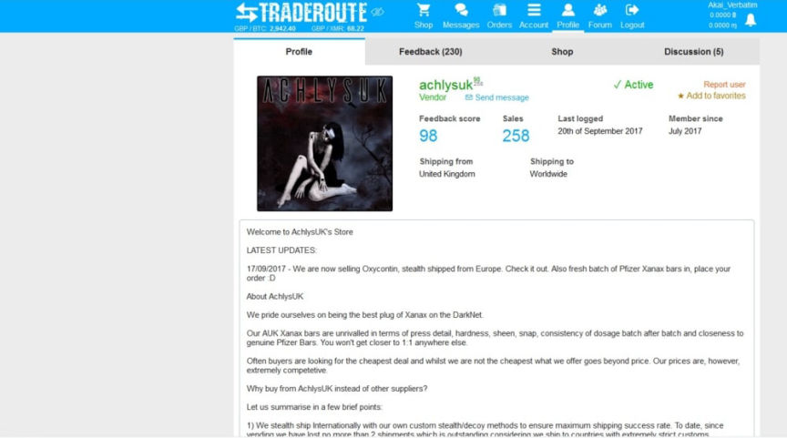
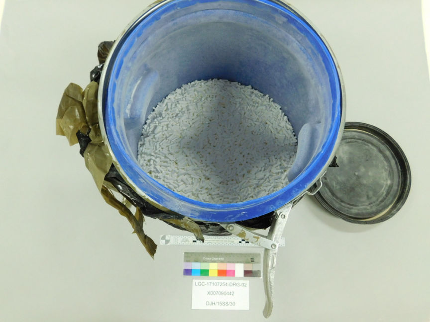
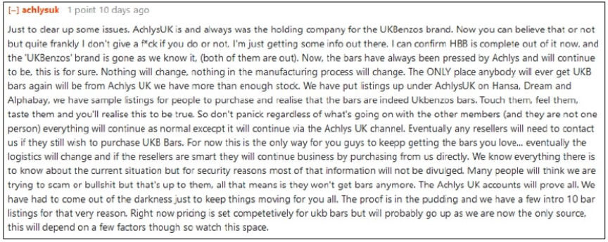
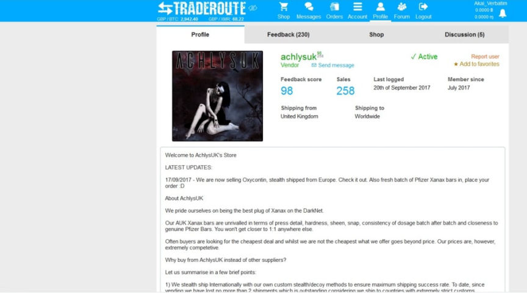
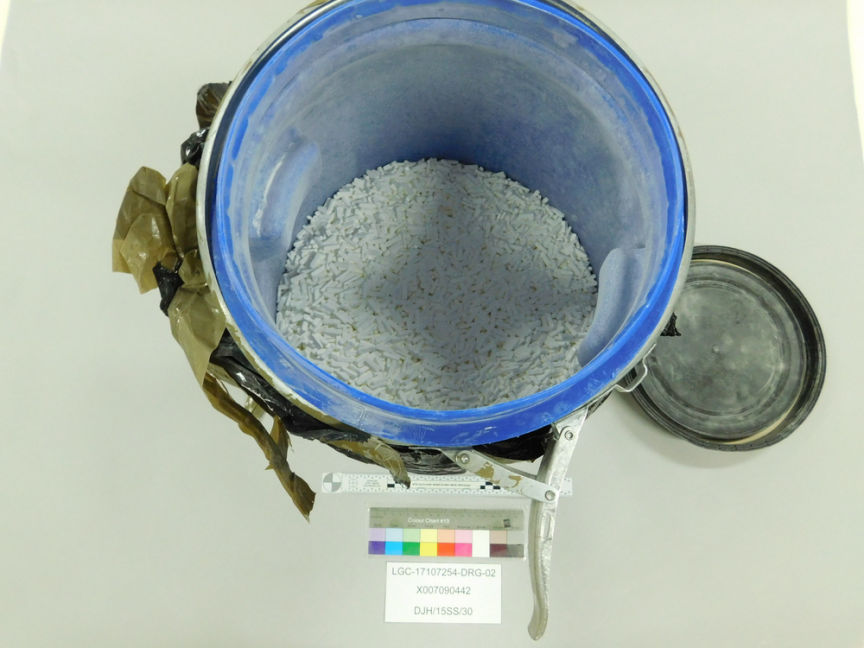
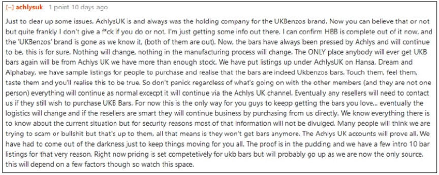

UK Trio Imprisoned for Distributing Counterfeit Xanax
The Portsmouth Crown Court sentenced three men to prison for roles in a conspiracy that raked in millions from the distribution of counterfeit Xanax and other drugs through the dark web.

According to the South East Regional Organised Crime Unit (SEROCU), 36-year-old Marc Ward of Portsmouth, 30-year-old Charlton Pascal of Luton, 36-year-old Thomas Durden of Kent, 35-year-old Christopher Kirkby of Bedford, and 49-year-old John Gordon Turner of Devon participated in the distribution of drugs worth over 20 million pounds on multiple dark web marketplaces through the "HulkedBenzoBoss" and "AchlysUK" vendor profiles.
The defendants started selling drugs through the HulkedBenzoBoss vendor profile in 2014. Pfizer Global Security started investigating the vendor in June 2016. The investigators made multiple purchases from the vendor. The purchases reportedly led to the identification of Ward as the operator of the HulkedBenzoBoss vendor accounts.
Pfizer investigators handed over the investigation to the cops in early 2017. The police arrested Ward on June 13, 2017. Ward's arrest led to the seizure of four blue barrels containing counterfeit Xanax and more evidence of the production and distribution of drugs.

The cops established that Ward had fulfilled more than 22,843 orders. He subsequently withdrew bitcoin worth approximately 2.1 million pounds from various dark web markets to three cryptocurrency wallets.
Shortly after Ward's arrest, the rest of the defendants created the AchlysUK vendor profile and went on with the drug trafficking operation.

Undercover purchases by Pfizer investigators led to the identification of Pascal as the operator of the AchlysUK vendor accounts.
On October 5, 2017, the police executed search warrants at properties associated with Durden, Kirkby, and Pascal. They seized crypto worth 1.3 million pounds Durden.
The investigators arrested Turner on February 33, 2019.
Each of the five defendants pleaded guilty to conspiring in the distribution of Alprazolam. Ward also pleaded guilty to one count each of acquiring criminal property and converting criminal property and to two counts each of supplying class B and C drugs.
Durden and Kirkby also pleaded guilty to a count each of converting criminal property, while Pascal admitted a count of acquiring criminal property.
The sentencing hearing of Ward, Durden, and Kirkby took place on March 31, 2023. Ward was sentenced to five years in prison, Durden to six years and five months in prison while Kirkby was imprisoned for nine years and six months.
Pascal and Turner's sentencing hearing is scheduled to take place in May.

According to the South East Regional Organised Crime Unit (SEROCU), 36-year-old Marc Ward of Portsmouth, 30-year-old Charlton Pascal of Luton, 36-year-old Thomas Durden of Kent, 35-year-old Christopher Kirkby of Bedford, and 49-year-old John Gordon Turner of Devon participated in the distribution of drugs worth over 20 million pounds on multiple dark web marketplaces through the "HulkedBenzoBoss" and "AchlysUK" vendor profiles.
The defendants started selling drugs through the HulkedBenzoBoss vendor profile in 2014. Pfizer Global Security started investigating the vendor in June 2016. The investigators made multiple purchases from the vendor. The purchases reportedly led to the identification of Ward as the operator of the HulkedBenzoBoss vendor accounts.
Pfizer investigators handed over the investigation to the cops in early 2017. The police arrested Ward on June 13, 2017. Ward's arrest led to the seizure of four blue barrels containing counterfeit Xanax and more evidence of the production and distribution of drugs.

One of the blue barrels
The cops established that Ward had fulfilled more than 22,843 orders. He subsequently withdrew bitcoin worth approximately 2.1 million pounds from various dark web markets to three cryptocurrency wallets.
Shortly after Ward's arrest, the rest of the defendants created the AchlysUK vendor profile and went on with the drug trafficking operation.

AchlysUK explaining taking over from HulkedBenzoBoss
Undercover purchases by Pfizer investigators led to the identification of Pascal as the operator of the AchlysUK vendor accounts.
On October 5, 2017, the police executed search warrants at properties associated with Durden, Kirkby, and Pascal. They seized crypto worth 1.3 million pounds Durden.
The investigators arrested Turner on February 33, 2019.
Each of the five defendants pleaded guilty to conspiring in the distribution of Alprazolam. Ward also pleaded guilty to one count each of acquiring criminal property and converting criminal property and to two counts each of supplying class B and C drugs.
Durden and Kirkby also pleaded guilty to a count each of converting criminal property, while Pascal admitted a count of acquiring criminal property.
The sentencing hearing of Ward, Durden, and Kirkby took place on March 31, 2023. Ward was sentenced to five years in prison, Durden to six years and five months in prison while Kirkby was imprisoned for nine years and six months.
Pascal and Turner's sentencing hearing is scheduled to take place in May.